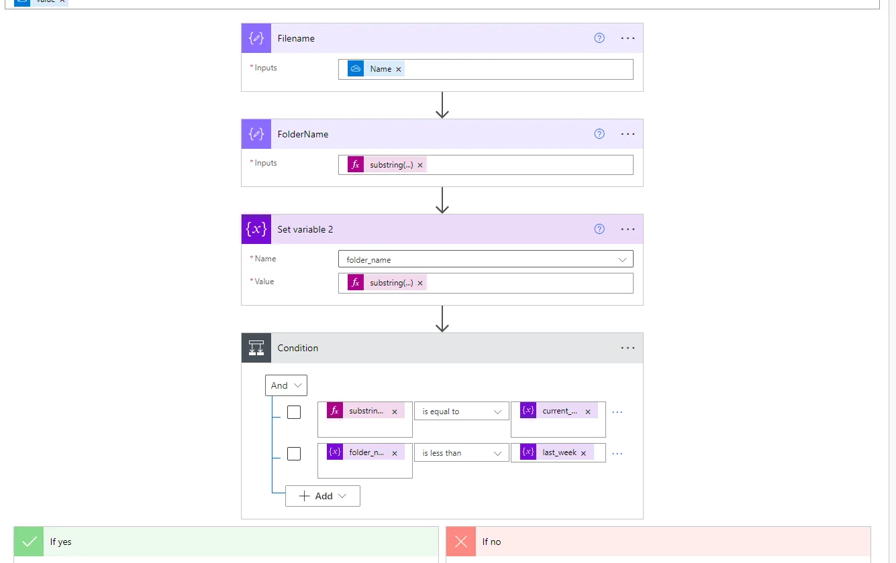

As a dedicated developer, I strive for efficiency and productivity, and after multiple lines of code, I discovered the power of Microsoft Power Automate. Little did I know that this decision would transform my job performance and my entire work experience.
A Frustrating Challenge
When I first encountered repetitive and time-consuming tasks in my daily workflow, I couldn’t help but feel frustrated. It seemed that these mundane activities were holding me back from focusing on more meaningful work. That’s when I stumbled upon Power Automate, a powerful tool that promised to streamline and automate processes. Intrigued by the possibilities, I dived headfirst into learning this incredible platform. Let me tell you – Microsoft… You guys suck!. lol… Write better documentation next time, please.
Anyways! After 100 hours of YouTube with these Indian guys that speaking half in English and half in Hindu… Now I know how to code appropriately in Power Automate.
Enhanced Efficiency and Productivity
As I integrated Power Automate into my daily routine, I observed a remarkable shift in my efficiency and productivity. Mundane tasks that once consumed hours of my time were now accomplished effortlessly, leaving me with more bandwidth to focus on strategic initiatives. With automated email notifications, reminders, and data syncing, I no longer waste valuable energy on manual follow-ups and redundant data transfers. The time saved translated into increased productivity, allowing me to take on more challenging projects.
Conclusion
A Transformational Journey Learning to use Power Automate has undeniably transformed my job performance and overall work experience. By automating repetitive tasks, I reclaimed valuable time and redirected it towards more strategic and impactful work. The platform’s seamless integration capabilities empowered me to collaborate effectively and communicate efficiently with my colleagues. The experience of harnessing automation not only boosted my productivity but also ignited my passion for innovation.
